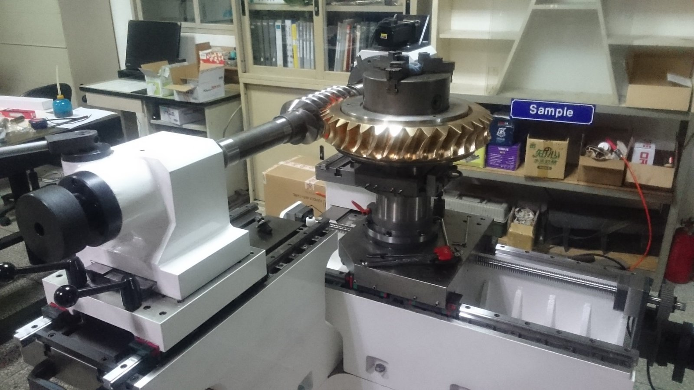
客製化專用工具機
渦桿咬合機
客製化渦桿咬合機，展示機台結構、組裝過程及渦桿與渦輪咬合配置。
OUR PROJECTS / ENGINEERING SOLUTIONS
以專業的齒輪加工技術與機械整合能力，
為客戶提供高品質、高效率的解決方案。
PORTFOLIO
目前已加入 PFAUTER P1000 六軸滾齒機控制器翻新、石英加工機維修與 MOTOKUBO CNC 洗溝機改造、雷射手臂平台設計與自動化電控系統整合與鍵槽加工機改造、MOOR螢幕更換與機械手臂安裝、晶圓研磨機與平面磨床與高精度齒輪加工與渦桿咬合機與電磁機構與數位電表數據監視收集系統專案及圖片；其餘卡片仍為示範資料。
顯示 14 個專案項目

客製化渦桿咬合機，展示機台結構、組裝過程及渦桿與渦輪咬合配置。
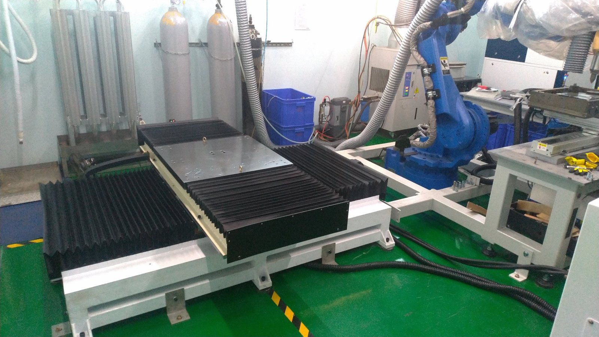
客製化雷射手臂平台設計，展示平台結構、手臂配置與操作介面。
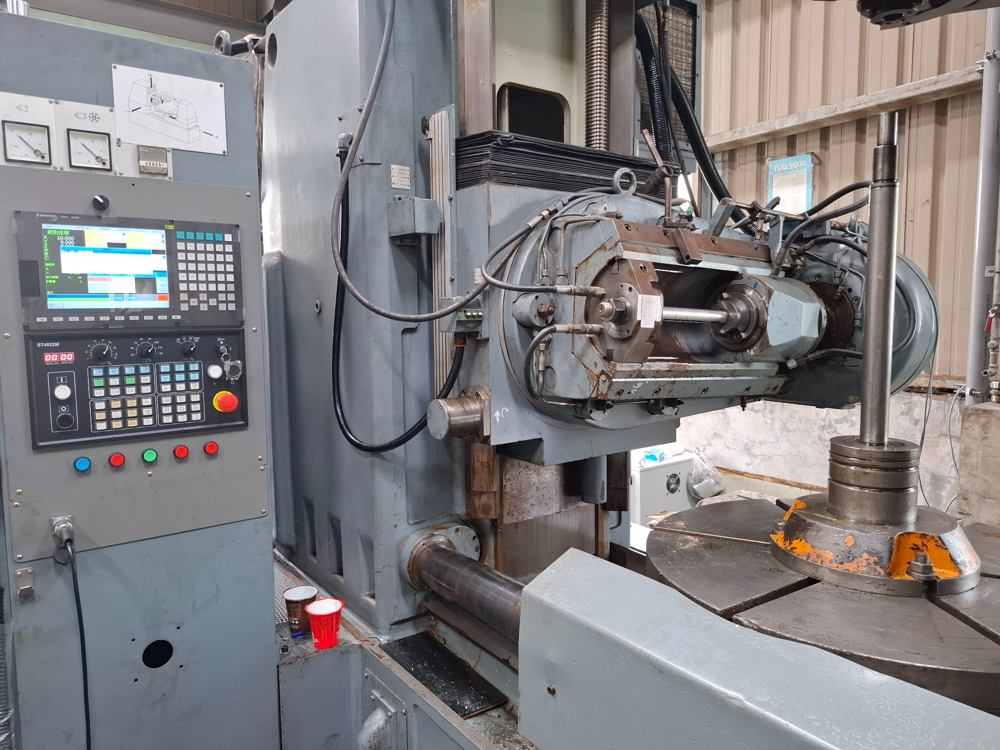
整機控制器翻新，針對既有滾齒機進行控制系統更新。
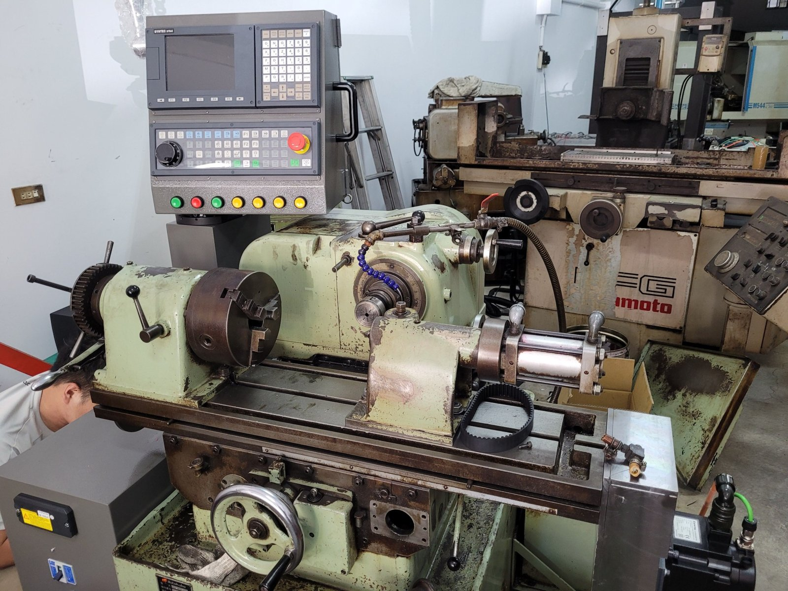
機械設備改造，展示機台、傳動螺桿、CNC 操作介面與控制箱設計。
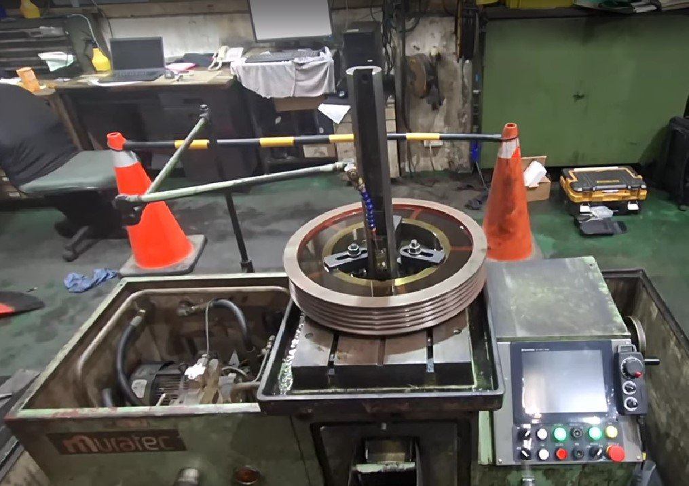
鍵槽加工機設備改造，展示機台、加工配置與操作控制面板。
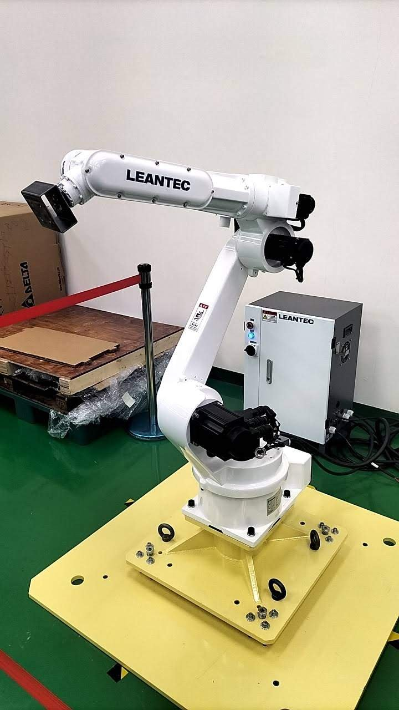
機械手臂安裝與設備整合，展示手臂配置、夾持機構及整合設計圖。
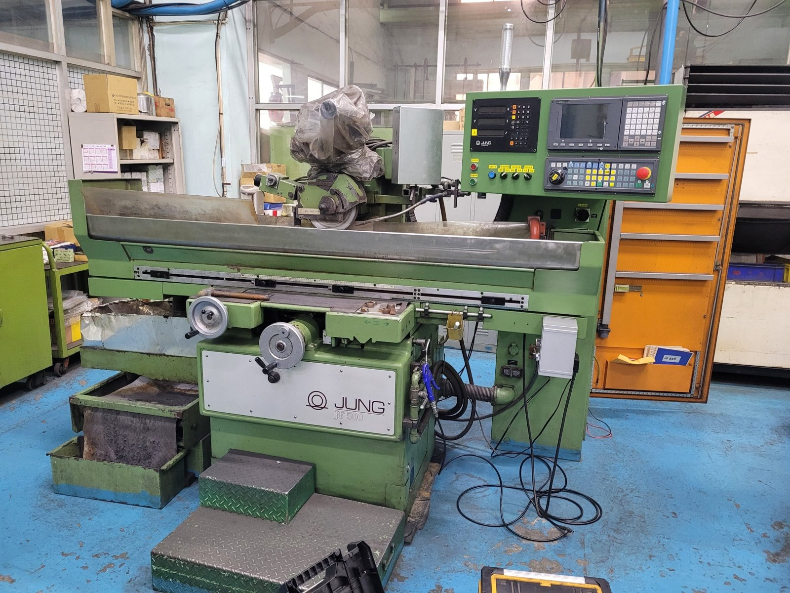
平面磨床設備改造，展示機台、CNC 操作介面與研磨參數設定。
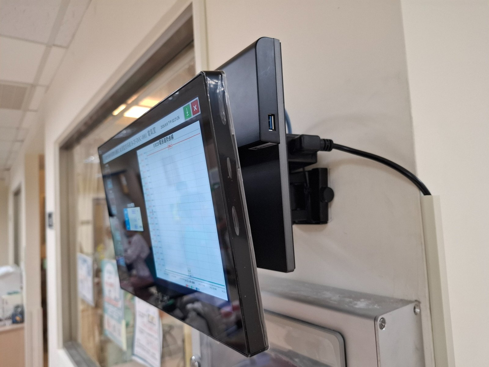
數位電表數據監視與收集，展示監視終端安裝及電壓、電流、電能紀錄畫面。
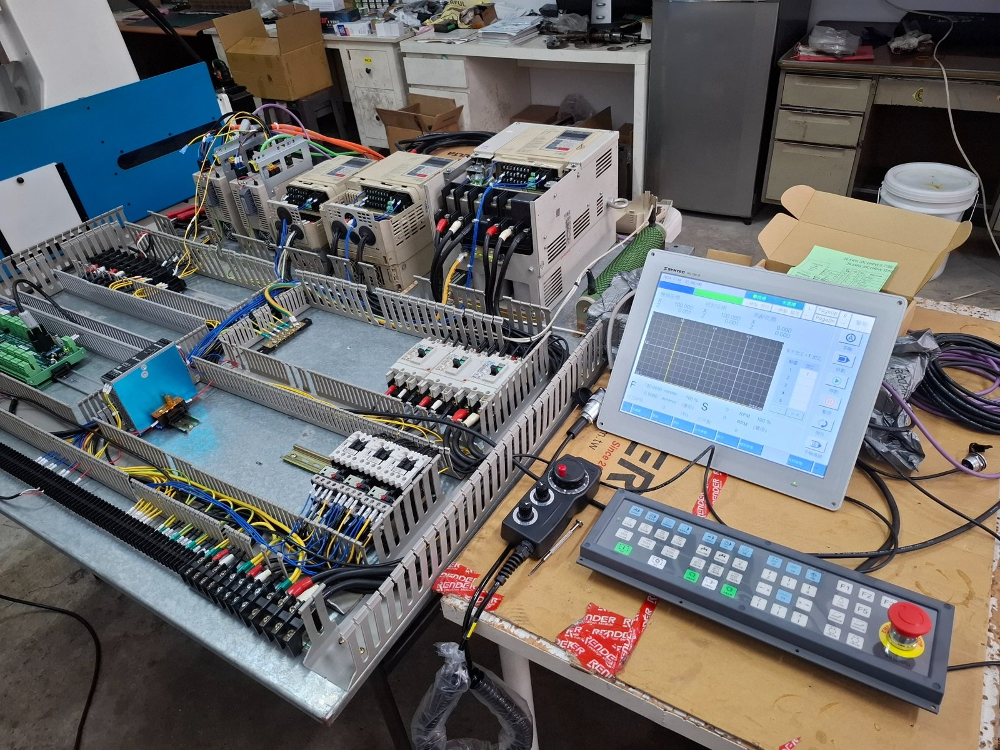
展示 PLC、驅動、控制櫃配線與設備操作介面整合。
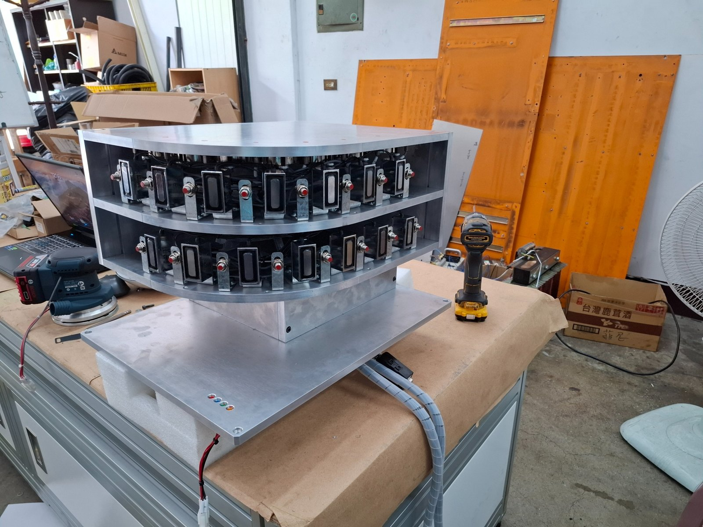
電磁機構設計與製造，展示內部元件配置、組裝外觀及電控整合。
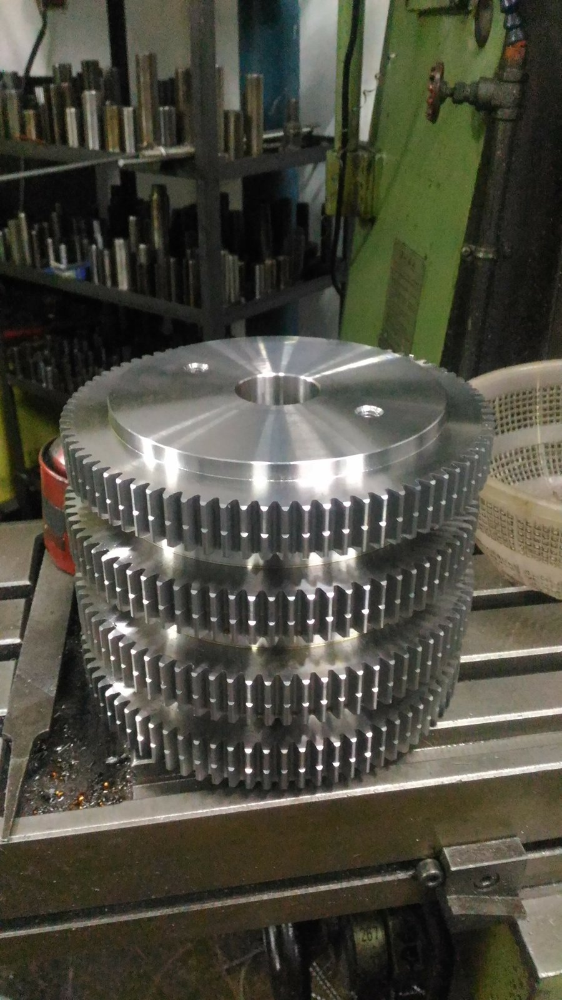
展示齒輪、齒條等加工成品與齒形加工現場。
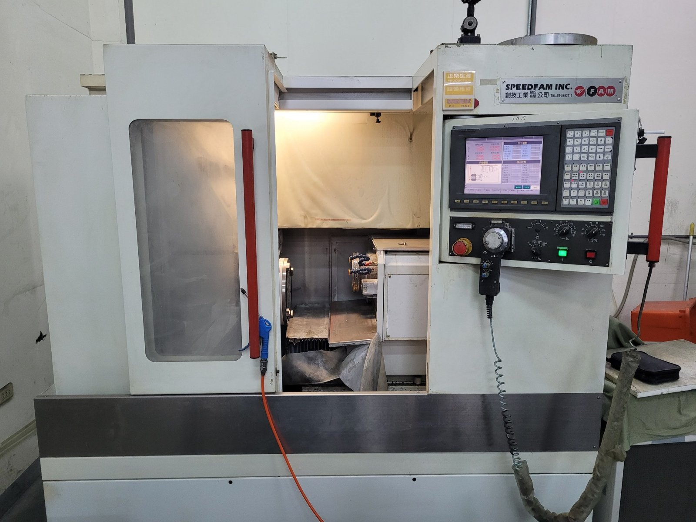
晶圓研磨機設備維修，展示機台、研磨操作介面與電控系統配置。
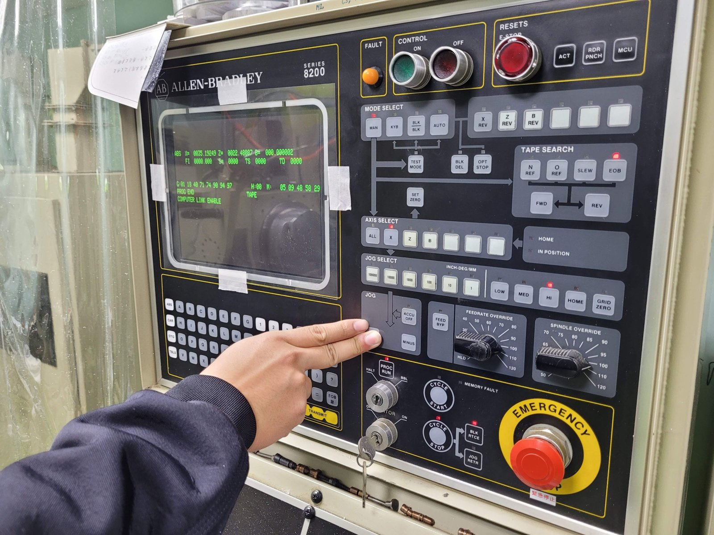
MOOR 設備螢幕更換，展示原螢幕、拆裝過程與更換後的顯示畫面。
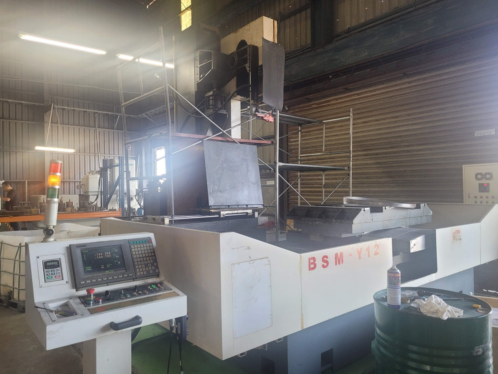
石英加工設備維修，展示機台、控制面板與傳動機構現場照片。
※ PFAUTER P1000、石英加工機維修與 MOTOKUBO CNC 洗溝機改造與雷射手臂平台設計與自動化電控系統整合與鍵槽加工機改造與MOOR螢幕更換與機械手臂安裝與晶圓研磨機與平面磨床與高精度齒輪加工與渦桿咬合機與電磁機構與數位電表數據監視收集系統為實際專案，照片依提供資料建立；其他卡片均為版型示範，非實際案例。
LET'S TALK ENGINEERING
歡迎提供圖面、規格或設備需求，與我們討論合適的解決方案。